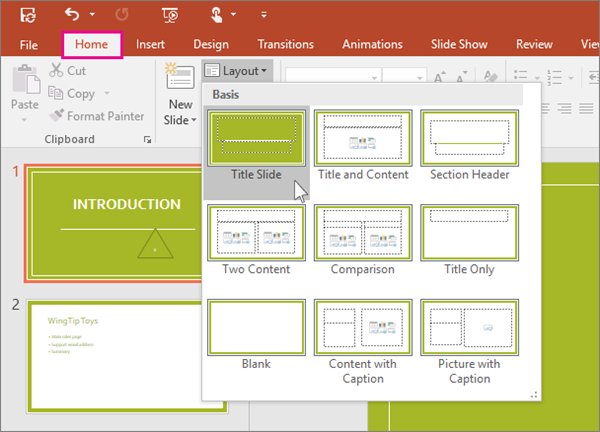
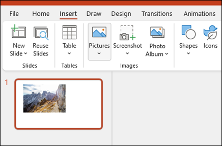

1- Abra o PowerPoint. No painel esquerdo, selecione Novo.
2- Selecione uma Opção :
Para criar uma apresentação do zero, selecione Apresentação em branco ;
Para usar um design preparado, selecione um dos modelos.
Para ver dicas sobre como usar o PowerPoint, selecione Fazer um tour e selecione Criar , Para ver dicas sobre como usar o PowerPoint, selecione Fazer um tour e selecione Criar.

Adicionar um slide
1- Nas miniaturas no painel esquerdo, selecione o slide que deseja que o novo slide siga.
2- Na guia Página inicial , na seção Slides , selecione Novo slide.
3- Na seção Slides , selecione Layout e selecione o layout desejado no menu.
Adicionar e Formatar texto
1- Coloque o curso dentro de uma caixa de texto e digite algo.
2- Selecione o texto, selecione uma ou mais opções na seção Fonte da guia Página inicial, como Fonte, aumentar tamanho da fonte, diminuiur tamanho da fonte, nagrito, Itálico, Sublinhado.
3- Para criar listas com marcadores ou numeradas, selecione o texto e selecione marcadores ou Numeração.

Adicine uma imagem, forma.
1- Vá para a guia Inserir.
2- Para Adicionar uma imagem:
Na seção Imagens , selecione Imagens.
No menu Inserir imagem de , selecione a fonte desejada.
Procure a imagem desejada, selecione-a e selecione Inserir.
3- Para Adicionar Ilustrações:
Na seção Ilustrações , selecione Formas , Ícones , Modelos 3D , SmartArt ou Gráfico.
Na caixa de diálogo que se abre quando você clica em um dos tipos de ilustração, selecione o item desejado e siga as instruções para inseri-lo.